基于 PMBOK 框架的项目管理知识体系梳理，涵盖十大知识领域、敏捷实践及核心原则，结合考试要点与实战理解整理而成。
项目管理标准的目的
项目管理标准为了解项目管理及其如何实现预期成果提供了基础；
该标准适合任何行业、地点、规模或交付方式（如预测、敏捷、混合型）的项目；
它描述了项目运作的系统，包括治理、可能的职能、项目环境以及针对项目管理和产品管理之间关系的考虑因素。
什么是项目
项目：为创造独特的产品、服务或成果而进行的临时性工作。
独特性：生产过程或成果有差异即可——>产生风险；
临时性：有明确的“起”“止”时间点，与时间长短无关；
渐进明细：先完成，后完美。
项目管理&运营管理
项目：临时的，独特的；
运营：持续的，重复的；
项目管理：变，时间越短越好；
运营管理：不变，时间越长越好；
项目管理:把事办成的方法论，万物皆可项目。
项目的基本要素：
启动背景
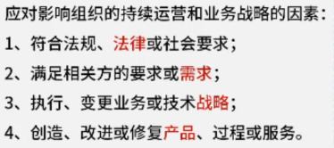
目的/作用：
驱动变更：通过项目改变状态
创造商业价值：有形的（实利）+无形的（虚名）
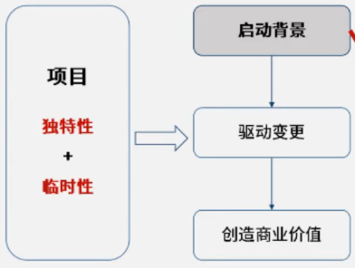
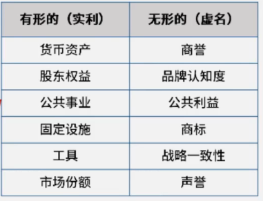
组织级项目管理(OPM)：指为实现战略目标而整合项目组合、项目集和项目管理与组织驱动因素的框架。
项目管理：注重项目本身的相互依赖关系，以确定管理项目的最佳方法。
项目集管理：注重作为组成部分的项目与项目集之间的依赖关系，以确定管理这些项目的最佳方法。（1+1>2，集成or冲突）
项目组合管理：是指为了实现战略目标的集中管理。项目组合中的项目集或项目不一定彼此依赖或直接相关。在开展组织和项目组合规划时，要基于风险、资金和其他考虑因素对项目组合组件排列优先级。
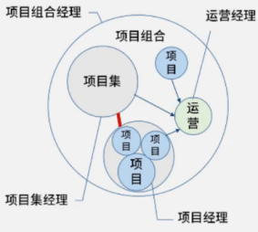
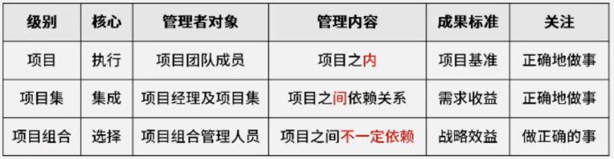
项目的生命周期和各个阶段
项目生命周期：项目从启动到完成所经历的一系列阶段。（一个项目不拥有所有阶段；裁剪：根据实际情况，选择一些阶段进行）
项目关口：（项目阶段：开始——组织与准备——执行——结束）
阶段关口：在项目阶段结束时进行，将项目的绩效和进度与项目和业务文件比较，以判断是否可进入下个阶段。
4个文件：项目商业论证；项目章程；项目管理计划；效益管理计划。
项目管理的基本方法论
五大过程组：工具——PDCA循环/戴明环
十大知识领域：相互依存，相互对抗，每个领域可用PDCA循环处理
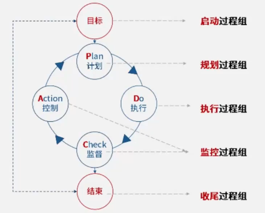
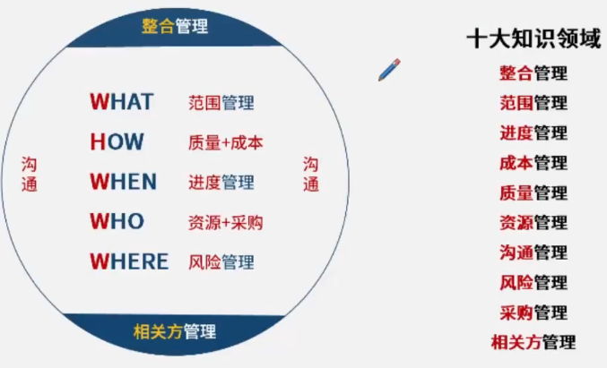
ITTO：Input/输入； Tool/工具； Technoogy/技术； Output/输出；
裁剪：项目特点具备独特性，根据特点优化流程，对过程进行相应的取舍；
项目成功标准（了解）：时间、成本、范围和质量等；成功的项目结果≠项目成功；
项目合规性（讲义p91）
合规问题优选找合规部门协商解决
管家需遵守其组织内外得到适当授权的法律、规则、法规和要求。
价值交付系统：
价值：某事的作用
组织为干系人创造价值，项目创造价值的方式示例包括（但不限于）：
创造满足客户或最终客户需要的新产品、服务或成果
提高效率、生产力、效果或响应能力
维持以前的项目集、项目或业务运营所带来的收益
做出积极的社会或环境贡献
推动必要的变革，以促进组织向期望的未来状态过渡
可以单独或共同使用多种组件（价值交付组件：例如项目组合、项目集、项目、产品和运营）以创造价值，这些组件共同组成了一个符合组织战略的价值交付系统。
信息流：当信息和反馈在所有组件之间以一致的方式共享时，价值交付系统最为有效，使系统与战略保持一致，并与环境保持协调。
组织治理系统（了解）
治理=制定规则（高层）；管理=执行规则（项目管理层次）
治理系统提供了一个框架，其中包含指导活动的职能和流程，治理框架包括但不限于:
监督
控制
价值评估
各组件之间的整合
决策能力
项目有关的职能（了解）
项目交付是由人驱动的，与项目有关的职能由人履行,可由一个人履行也可以由一组人履行
八大职能：可兼任
提供监督协调（领导）
提供目标和反馈（客户）
引导和支持（敏捷教练）
开展工作并贡献洞察（团队）
运用专业知识（主题专家）
提供业务方向和洞察（商业分析师）
提供资源和方向（发起人、倡导者）
维持治理（高层领导）
产品考虑因素（了解）
产品：指可以量化的生产出的工件，既可以是最终制品，也可以是组件制品。
产品管理：涉及将人员、数据、过程和业务系统整合，以便在整个产品生命周期中创建、维护和开发产品或服务。
产品生命周期：指一个产品从概念、交付、引入、成长、成熟到衰退的整个演变过程的一系列阶段。
项目管理商业文件：经济可行性+技术可行性
准备前期进行需求评估，产生2个商业文件：
商业论证（经济可行性）
效益管理计划
需求评估：通常是在商业论证之前进行，包括了解业务目的和目标、问题及机会，并提出处理建议。需求评估结果可能会在商业论证文件中进行总结。
商业论证
商业论证的目的：判断项目可不可行，值不值得做（业务合理性）
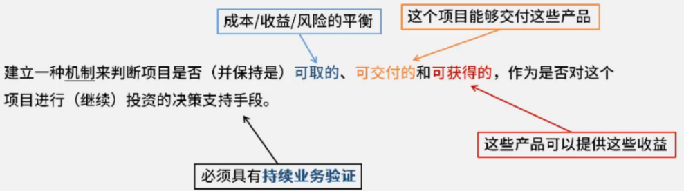
商业论证的开发路径：整个项目周期内都会进行商业论证
持续的商业论证：指文档化的经济可行性研究报告，用来对尚缺乏充分定义的所选方案的收益进行有效性论证，是启动后续项目管理活动的依据。例如，成本效益分析数据。
项目启动之前通过商业论证，可能会做出继续/终止项目的决策。
商业论证是一种项目商业文件，可在整个项目生命周期中使用。
商业论证列出了项目启动的目标和理由。它有助于在项目结束时根据项目目标衡量项目是否成功。
效益管理计划
效益管理计划（考内容）：描述了项目实现效益的方式和时间，以及应制定的效益衡量机制。描述了效益的关键要素：
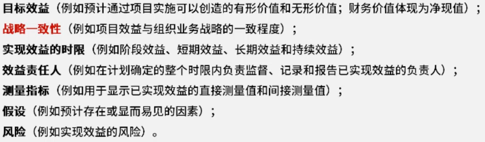
其他：（项目经理没有权限修改项目章程等文件）
制定效益管理计划需要使用商业论证和需求评估中的数据和信息。
项目效益管理计划的制定和维护是一项迭代活动。它是商业论证、项目章程和项目管理计划的补充性文件。
项目经理与发起人共同确保项目章程、项目管理计划和效益管理计划在整个项目生命周期内始终保持一致。
项目成功标准：净现值及其他指标越大越好，投资回收期越短越好
项目成功可能涉及与组织战略和业务成果交付有关的其他标准。这些项目目标可能包括（但不限于)：
完成项目效益管理计划；
达到商业论证中记录的已商定的财务测量指标：
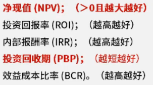
（净现值：考虑通货膨胀等因素导致的资金贬值后）
影响项目的两大因素：（想做∩能做∩可做）
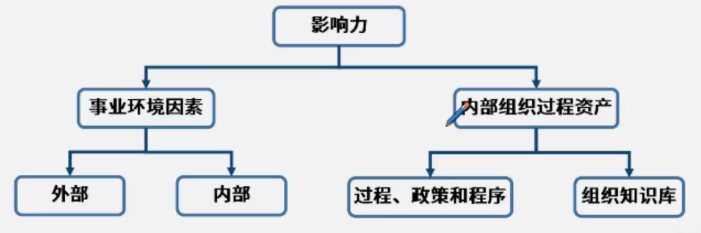
事业环境因素源于项目外部（往往是企业外部）的环境，组织过程资产源于企业内部,可能来自企业自身、项目组合、项目集、其他项目或这些的组合。
事业环境因素（不可控）：法律法规等公司外部因素，公司固定工作时间等客观存在的外部因素，有好有坏，必须遵守。
组织过程资产（可控）：公司自己以往的项目经验
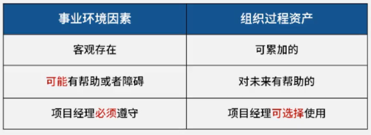
二者联系：通过组织过程资产，突破事业环境因素（eg.川藏线经验突破冻土限制）
组织体系：
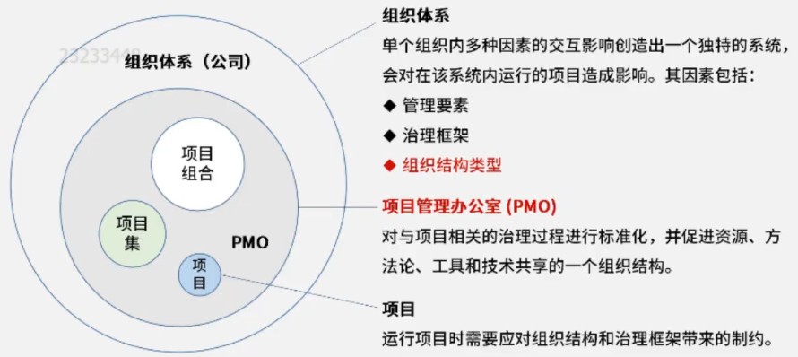
组织结构类型：
职能型：总经理——>部门——>职员
项目型：总经理——>项目——>职员
矩阵型：职能和项目交错存在（弱；平衡；强——项目经理的权力，默认平衡）
组织治理框架：治理——制定规则，对管理的管理；管理——执行规则
项目管理办公室（PMO，program management office）：对与项目相关的治理过程进行标准化，并促进资源、方法论、工具和技术共享的一个组织结构。
PMO有几种不同类型：
支持型：担当顾问的角色，向项目提供模板、最佳实践，以及来自其他项目的信息和经验教训。（资源库）
控制型：不仅给项目提供支持，而且通过各种手段要求项目服从。（控制程度中等）
指令型：直接管理和控制项目。项目经理由PMO指定并向其报告。（控制程度高）
PMO的一个主要职能是通过各种方式向项目经理提供支持：（关注整体）
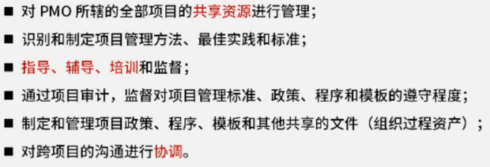
项目经理的作用：协调整合
项目经理类型
项目经理：由执行组织委派，领导团队实现项目目标的个人。
职能经理：专注于对某个职能领域或业务部门的管理监督。
运营经理：负责保证业务运营的高效。
项目经理的能力三角：人、过程、业务环境
技术项目管理（硬实力）——与项目、项目集和项目组合管理特定领域相关的知识、技能和行为，即角色履行的技术方面。
领导力（软技能）——指导、激励和带领团队所需的知识、技能和行为，可帮助组织达成业务目标。
战略和商务管理（越位思考，本位操作）——纵览组织概括并有效协商和执行有利于战略调整和创新的决策和行动。
项目经理的职业道德：责任、尊重、公正、诚实
项目经理的技能：
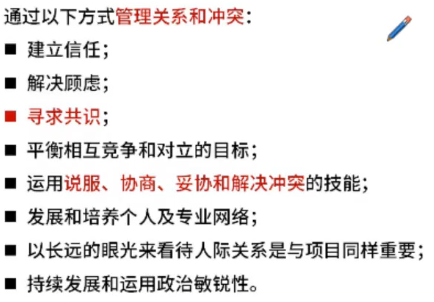
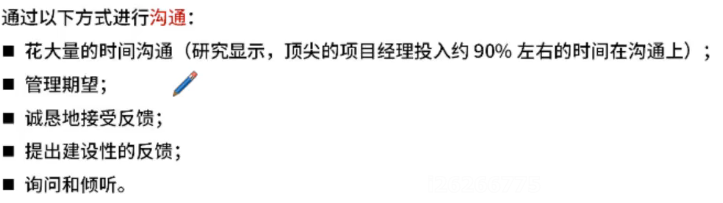
项目团队管理：
资源——>人力，不是越多越好，不能轻易抛弃（像孩子一样对待）
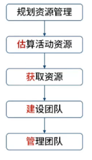
高绩效团队的特征：人尽其才，物尽其用
项目资源管理：核心体系/逻辑——PDCA循环
组织论规划项目资源
层级型（以终为始）：事(WBS)-岗(OBS)-人(RBS)
工作分解结构，WBS/Work Breakdown Structure
组织分解结构，OBS/Organizational Breakdown Structure
资源分解结构，RBS/Resource Breakdown Structure
责任分配矩阵，RAM：避免职责不清，包括RACI
RACI（执行、负责、咨询和知情）：团队由内部和外部人员组成时，RACI矩阵对明确划分角色和职责特别有用。
文本型：详细描述工作内容/职责
资源管理计划：作为项目管理计划的一部分，资源管理计划提供了关于如何分类、分配、管理和释放项目资源的指南。（How to do，不包含谁具体做什么）
资源管理计划可以根据项目的具体情况分为团队管理计划和实物资源管理计划。资源管理计划可能包括（但不限于）：
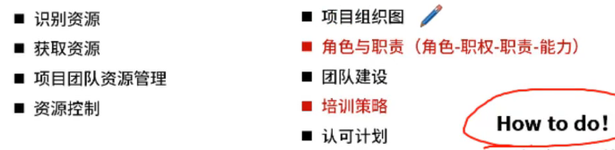
考法：
查角色职责首选RAM/RACl，但别忘了资源管理计划里面也有
团员需要培训，先更新资源管理计划再培训最优
作用―资源模块的指南性文件
团队章程：内容及作用—记录团队价值观、共识和工作指南（规章制度）
包括：
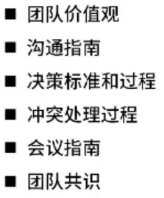
估算活动资源：
资源日历：人何时可用、可用多久
项目日历：活动开展的时间
获取资源：
3种情况——方法：
富余（择优）——多标准决策分析
紧张（谈判）
谈判不了那就去招募采购
多标准决策分析：根据标准的相对重要性对标准进行加权（权重分析）
预分派：指事先确定项目的实物或团队资源，可在下列情况下发生：
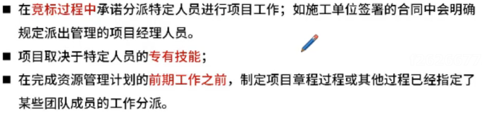
谈判：（协商，沟通，先内后外）
职能经理。
执行组织中的其他项目管理团队。
外部组织和供应商
共同愿景
工件：（派工单里有具体什么人做什么事，资源管理计划和RAM只有职责）
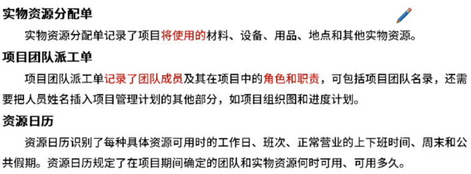
建设团队：
项目经理应该能够定义、建立、维护、激励、领导和鼓舞项目团队，使团队高效运行，并实现项目目标。团队协作是项目成功的关键因素，而建设高效的项目团队是项目经理的主要职责之一。通过以下行为可以实现团队的高效运行:
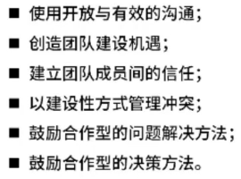
建设项目团队的目标包括（但不限于）：
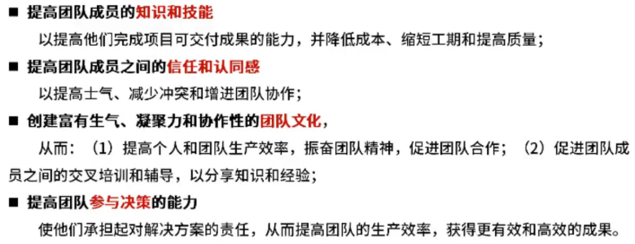
团队建设五阶段——塔克曼阶梯理论（不是每个阶段都是必须的，阶段可能倒退）
区分团队在不同阶段的表现
PM在不同阶段应该如何指引团队
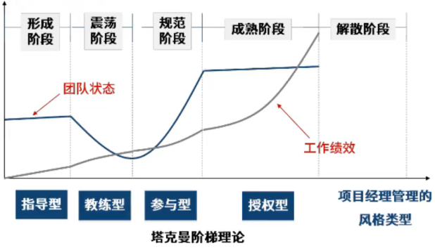
方法——集中办公和虚拟团队：虚拟团队可以解决物理位置的问题，需要注意文化差异
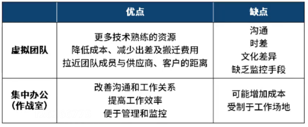
方法——沟通技术：共享门户；视频会议；音频会议；电子邮件/聊天软件
方法——团队管理工具
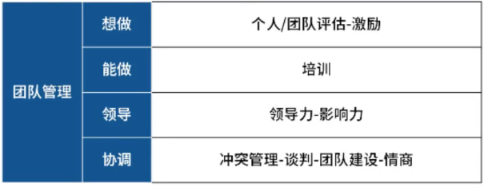
模型：激励理论
激励：为某人采取行动提供理由（激励的核心——击中对方的需求）
认可与奖励：有形与无形的奖励
马斯洛的需求层次理论：生理——安全——社会——尊重——自我实现
X理论和Y理论：人性本懒和人性本勤
成就动机理论：缺什么给什么
双因素理论：激励因素——做好有益，做坏无害；保健因素——相反
期望理论：激励力量=期望值×效价
方法——培训：培训包括旨在提高项目团队成员能力的全部活动，可以是正式或非正式的。不止项目经理对成员有培训职责，职能经理也有。（70-20-10法则）
首先确定培训需求
确定培训的内容、形式
培训≠指导（指导偏向实践）
方法——领导力和影响力
领导力：领导团队、激励团队做好本职工作的能力（趋向于目标）
影响力：（趋向于沟通）
模型——高效倾听模型
方法——听的五个层次：同理心倾听
人际关系技能——情商：适用场景，指人的情绪品质和对社会的适应能力
（出现基本是正确答案）
自我认知：察觉情绪的出现
自我调节：控制情绪冲动，转化不良情绪
自我激励：调动情绪
识别他人情绪
处理人际关系
模型——情绪ABC理论：原因——>信念——>后果
模型——冲突管理：明确五种冲突解决方式的定义，依据情景判断使用何种方式
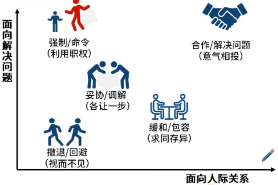
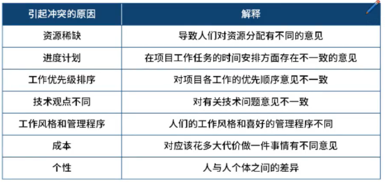
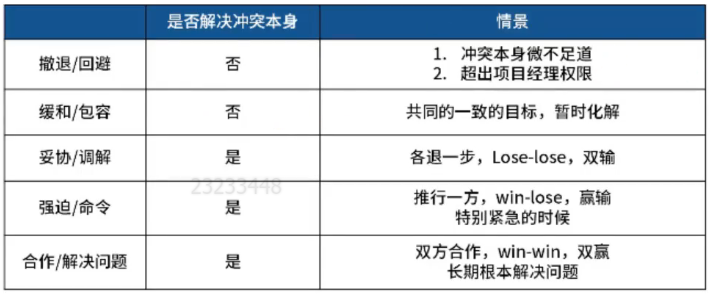
方法——团队建设：作用：提升士气，强化团队的社交关系，打造积极合作的工作环境。如：绩效不高，刚刚组成，无法协同等等
团队绩效评价：先分析后行动。项目经理有职责关心绩效不足的成员，帮助其分析问题，完成成长。
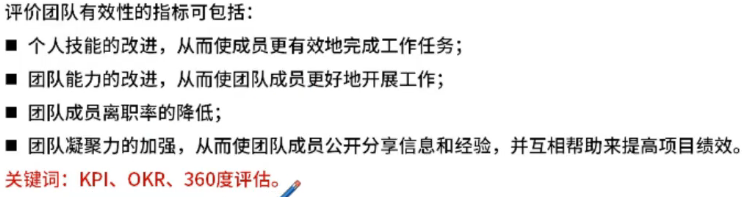
管理团队：
基本概念：团队成员工作表现不佳，应当了解原因，给予相应的支持。
鼓励团队：切合被鼓励者的要求和期望，可以内在的，也可以是外在的
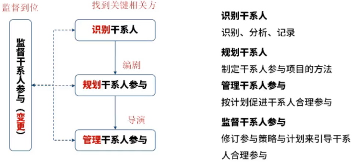
Stakeholder 相关方/干系人
干系人的概念：侧重于外部
识别干系人的重要性
干系人与项目的关系：受项目的积极或消极影响，或能对项目施加这些影响。
识别的重要性：为提高成功的可能性，应——尽早开始识别干系人；进行干系人优先级排序；引导干系人参与。（识别-排序-引导）
识别干系人：核心——找；分类排序（在整个项目过程中渐进明细）
干系人分析：利害关系包括——兴趣；权利；所有权；知识；贡献；
数据表现：
3种方格——适用：小型项目；干系人与项目的关系很简单的项目；干系人之间的关系很简单的项目。
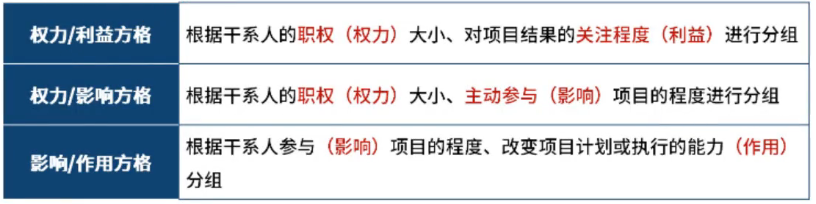
。
凸显模型——适用：复杂的干系人大型社区；干系人社区内部存在复杂的关系网络
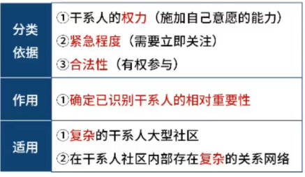
影响方向
工件——干系人登记册：定期查看，发现干系人发生变化或未识别时及时更新干系人登记册
规划干系人参与：应该在项目生命周期的早期制定一份有效的计划；然后，随着干系人社区的变化，定期审查和更新该计划。
方法——干系人参与评估矩阵：可以看到干系人参与状态（参与度），从干系人登记来
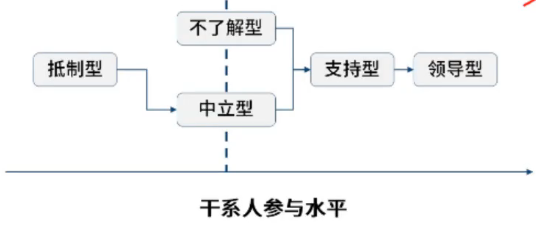
工件——干系人参与计划：干系人态度有问题，需要用策略解决的时候查看此文件，可以有效引导干系人参与，提高项目成功率
管理干系人参与：（执行过程，照着计划做事）
确保干系人得到充分的培训和指导
沟通技能
人际关系团队技能
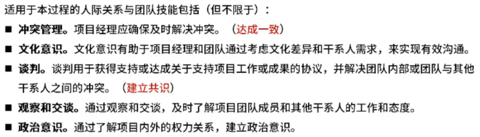
方法——会议：用于讨论和处理任何与干系人参与有关的问题或关注点。在本过程中需要召开的会议类型包括（但不限于）：
决策；问题解决；经验教训和回顾总结；项目开工；迭代规划
召开会议前，提前发布通知明确会议目的等要素。指定主持人，基本规则，避免出现混乱。
监督干系人
项目沟通管理（给场景，判断沟通方式）
沟通是指意义或无意的信息交换，可以是想法、指示或情绪。
沟通活动的分类：留痕（记录、证据）；是否正式；其他——内外部，层级沟通
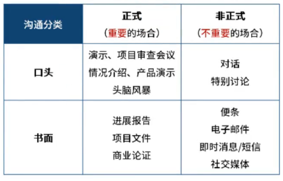
项目沟通管理：（2个部分）
制定策略
执行必要活动
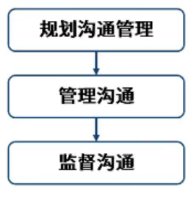
规划沟通管理—产生—>沟通管理计划：让正确的信息在正确的时间通过正确的方式传递给正确的人，达到正确的效果。（有效沟通）
沟通目的明确；
尽量了解沟通接收方，满足其需求及偏好；
监督并衡量沟通的效果。
沟通需求分析（考作用）：分析沟通需求，确定项目干系人的信息需求，包括所需信息的类型和格式，以及信息对干系人的价值。常用于识别和确定项目沟通需求的信息包括〈但不限于）：
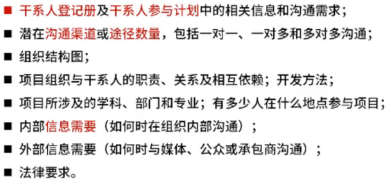
沟通渠道数量和沟通方法——沟通渠道数量计算CC=n(n-1)/2
沟通模型：噪音（无法完全消除）、反馈、第一步是编码
确认已收到：指接收方表示已经收到信息，但并不一定同意或理解信息的内容
反馈/响应：即接收方在对信息进行解码和理解的基础上，向发送方做出回复
通过反馈减少沟通漏斗
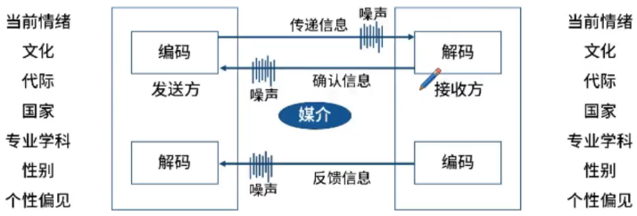
沟通方式的选择
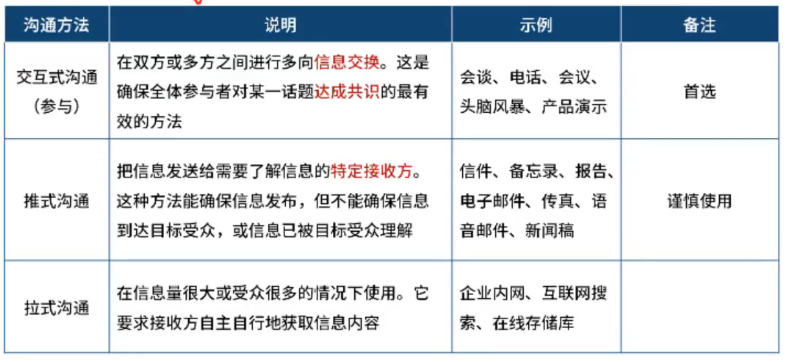
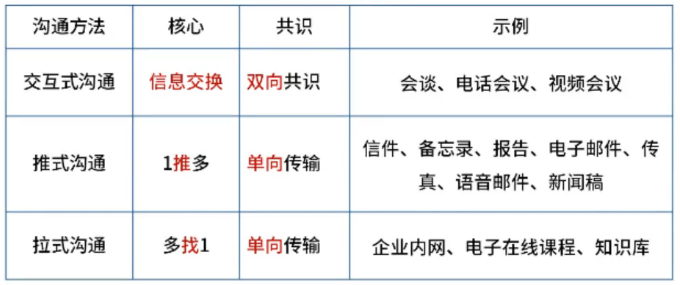
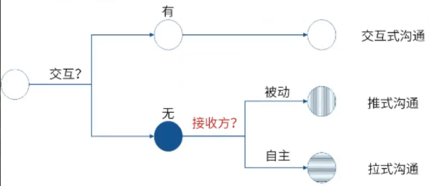
工件——沟通管理计划（只要是信息的传递(5W)出现问题，选它）
5W1H ( WHO,WHY,WHAT,WHEN, WHERE,HOW)
区分沟通管理计划和干系人参与计划
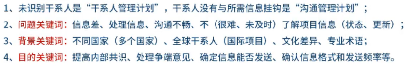
干系人参与计划VS千系人登记册VS沟通管理计划
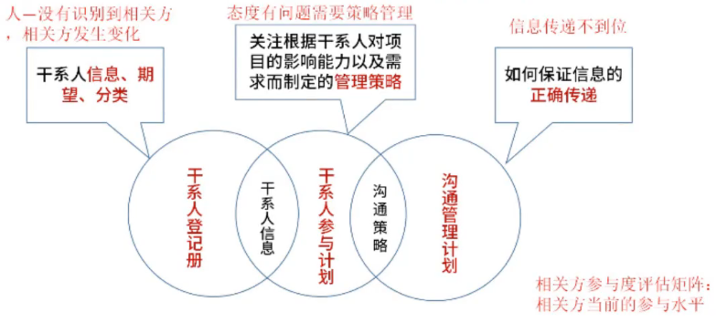
范围管理的内涵
项目范围管理：包括确保项目做且只做新需的全部工作，以成功完成项目的各个过程。
项目环境中“范围”的两种含义：产品范围&项目范围
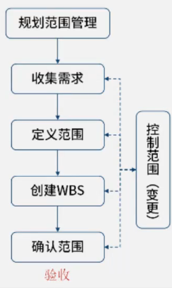
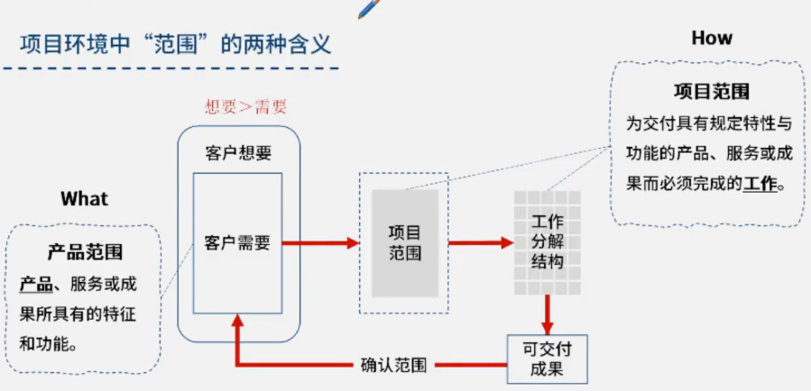
规划范围管理：（how to do，指南性文件）
需求——需求管理计划——> 产品 ——范围管理计划——>工作（需求不等于范围）
工件——需求与范围管理计划（需求在前）
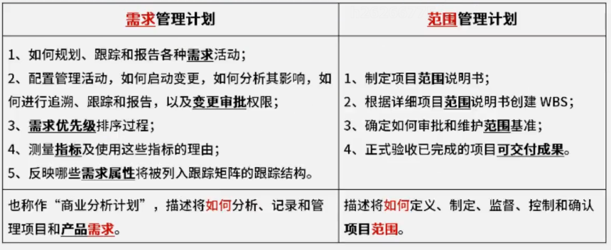
收集需求：为实现目标而确定、记录并管理相关方的需要和需求的过程。本过程的主要作用是，为定义产品范围和项目范围奠定基础，且仅开展一次或仅在项目的预定义点开展。
方法——数据收集
数据收集——>数据分析——>数据决策——>数据表现——>数据建模
头脑风暴：延迟评判，追求数量
名义小组：评分和排序
访谈：一对一/一对多，收集准确、机密信息
焦点小组：主持人、围绕焦点
问卷调查
德尔菲技术（匿名、反馈、统计）——防止花环效应，但费时费力
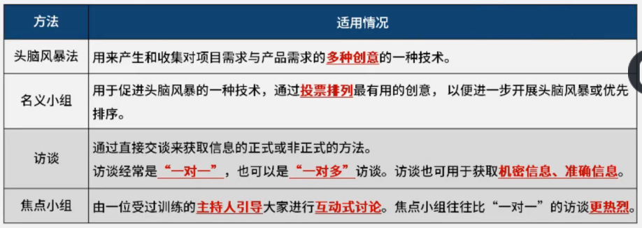
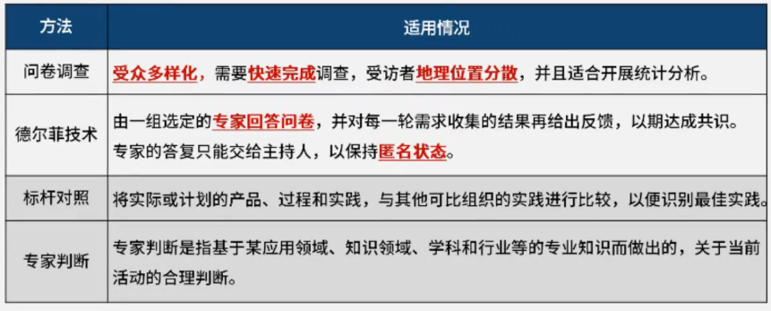
方法——数据决策技术：
投票、一致同意、大多数原则、相对多数原则、独裁
权重分析（多标准决策分析）
方法——数据表现：头脑风暴（创意）、亲和图（聚类）、思维导图（梳理，有主题）
方法——数据建模：原型法（收集早期反馈）
方法——人际关系和团队技能
观察：产品使用者难以或不愿说明需求时
引导：侧重达成一致，不选站队
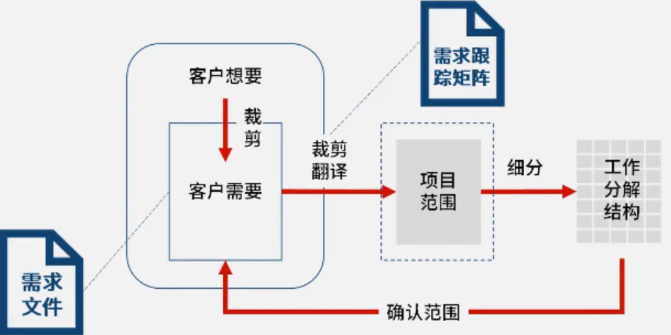
工件——需求文件：描述各种单一需求将如何满足与项目相关的业务需求
业务解决方案：相关方的需要
技术解决方案：指如何实现这些需要。
工件——需求跟踪矩阵（出现要求/需求/期望和可交付成果不一致，审查它）
把产品需求用来对连接到能满足需求的可交付成果的一种表格。提供了在整个项目生命周期中跟踪需求的一种方法，有助于确保需求文件中被批准的每项需求在项目结束的时候都能交付。最后，需求跟踪矩阵还为管理产品范围变更提供了框架。
和需求文件的区别：一个仅需求，一个是需求和可交付成果的桥梁
定义范围：制定项目和产品详细描述的过程。本过程的主要作用是，描述产品、服务或成果的边界和验收标准。
范围基准 三件套：范围说明书、WBS、WBS词典
工件——范围说明书（验收的参考文件）
145：定义内、外、边界
23：关于成果
项目章程和项目范围说明书的内容存在一定程度的重叠，但它们的详细程度完全不同。
总结：需求文件（头）——需求跟踪矩阵（桥梁）——范围说明书（尾）
创建WBS：是把项目可交付成果和项目工作分解成较小、更易于管理的组件的过程。
WBS组织并定义了项目的总范围，代表着经批准的当前项目范围说明书中所规定的工作。（以终为始）
在“工作分解结构”这个词语中，“工作”是指作为活动结果的工作产品或可交付成果，而不是活动本身。WBS最底层的组成部分称为工作包，比工作包更小的叫活动
方法——WBS分解技术
自上而下：逐层细化分解
自下而上：用于归并较低层次组件
滚动式规划：时间维度，渐进明细
8-80原则；百分百原则（无遗漏）
工件——WBS词典（对WBS的详细描述，验收标准是对应于工作包而不是整个项目）
工件——范围基准：范围说明书+WBS+WBS词典
控制范围：
作用：监督范围状态，管理范围基准的变更（整个项目过程中）
范围蔓延：未控制的产品或项目范围的扩大
方法——有变更，走流程：先核实，再分析，提申请（不支持镀金）
确认范围：
确认范围是正式验收已完成的项目可交付成果的过程。本过程的主要作用是，使验收过程具有客观性；同时通过确认每个可交付成果，来提高最终产品、服务或成果获得验吸的可能性。本过程应根据需要在整个项目期间定期开展（阶段验收）。
和定义范围进行区分
定义范围：确定做什么
确认范围：做验收
控制质量（内部）——确认范围（外部）——收尾
确认范围的执行
时间：确认范围在每个可交付成果生成时或者在阶段审查点开展（阶段结束时)。
事件：通过检查开展测量、审查与确认等活动，来判断工作和可交付成果是否符合需求和产品验收标准。
人物：符合验收标准的可交付成果应该由客户或发起人正式签字批准。应该从客户或发起人那里获得正式文件，证明相关方对项目可交付成果的正式验收。
规划和管理进度计划
项目进度管理：规划进度管理——定义活动（进一步分解活动）——排列活动顺序——估算活动持续时间——制定进度计划（总分总）
滚动式规划：
分解：活动——完成工作包所需的投入
滚动式规划：一种迭代式的规划技术，即详细规划近期要完成的工作(工作包)，同时在较高层级上粗略规划远期工作(规划包)。它是一种渐进明细的规划方式。
排列活动顺序
确定和整合依赖关系
紧前关系绘图法（PDM）
FS（finish to start）——结束到开始
提前量和滞后量：进度可重叠部分和需间隔部分
紧前关系绘图法：表示项目进度活动之间的逻辑关系（也叫依赖关系）的图形。带有多个紧前活动的活动代表路径汇聚，而带有多个紧后活动的活动则代表路径分支。（紧前-紧后关系）
路径汇聚和路径分支
估算活动持续时间
顺序：资源——进度——成本
活动主体时间估算+活动储备时间估算
资源日历：排班表
时间估算方法：（逻辑：从上到下越来越准；考点：适用场景）
储备时间分析
已知-未知：已知风险，不知影响；未知-未知：未知风险，未知影响
制定进度计划
单代号项目进度网络图
双代号网络计划图
关键路径是最长那条，决定了工期，进度压缩优选针对关键路径
TF/总浮动时间：可耽误多久不影响总工期的浮动时间
控制进度
资源优化调整匹配资源：资源优化用于调整活动的开始和完成日期，以调整计划使用的资源，使其等于或少于可用的资源。（组织关系依赖）
资源平衡——导致关键路径改变
资源平滑——不会改变关键路径。
进度压缩技术：在不改变项目范围的前提下，缩短项目的进度时间，以满足进度制约因素、强制日期或其他进度目标
赶工：增加资源，高成本低风险（不强迫加班，先协商）
快速跟进：并行活动，高风险低成本（自有依赖，无额外资源、成本，项目风险低）
规划成本管理
成本管理的步骤：规划成本管理——估算成本——制定预算——控制成本
几组成本的概念
全生命周期成本/LCC：贯穿于项目生命周期，开发成本和维护成本的总和
固定成本和变动成本：是否随着项目工作量发生变化
（成本=固定成本+产量×变动成本）
直接成本和间接成本：是否直接计入项目（是否专用资源）
机会成本和沉没成本：机会——为了得到而放弃；沉没——无法挽回，与当前无关
估算成本
成本估算等级：根据已知信息作出成本预测（分辨概念；什么场景下使用）
工件——成本估算：成本主体+应急储备+管理储备
制定预算
成本基准=工作包估算+应急储备（区分：项目预算=成本基准+管理储备）
项目资金需求：按时间段分配成本基准，得到一条S曲线，根据成本基准，确定总资金需求和阶段性（如季度或年度）资金需求。项目资金通常以增量的方式投入，并且可能是非均衡的，呈现出图中所示的阶梯状。
控制成本
挣值分析（EVA）：一种常用的绩效测量方法，可采用多种形式。它综合考虑项目范围、成本与进度指标，帮助项目管理团队评估与测量项目绩效和进展。
挣值分析将实际进度和成本绩效与绩效测量基准进行比较，以判断现状（偏差），预测未来（趋势）
Planned value/计划价值(PV)：为某活动或WBS组成部分的预定工作进度而分配且经批准的预算。
Earned value/挣值(EV)：项目活动或WBS组成部分的已完成工作的价值。
Actual Cost/实际成本(AC)：为完成活动或WBS组成部分的工作，而实际发生并记录在案的总成本。
偏差分析（偏差大于0好，EV在前，越大越好）
趋势分析：BAC完工预算；ETC完工尚需估算；EAC完工估算
质量管理的内涵
质量Vs等级（朱兰理论）：质量和等级没有必然联系
质量：作为实现的性能或成果，是“一系列内在特性满足要求的程度”。
等级：作为设计意图，是对用途相同但技术特性不同的可交付成果的级别分类。
朱兰三部曲：质量规划、质量控制、质量改进的质量三元论。一些活动又在整个过程的周而复始的循环中螺旋式上升，称为质量螺旋曲线。
管理质量VS质量保证：质量管理针对过程(QA），质量控制针对结果(QC)
预防VS检查：预防胜于检查
精确VS准确：合适才是最好
精确(Precision)是指重复测量的结果非常聚合，离散度很小；
准确(Accuracy)是指测量值非常接近实际值。
属性抽样VS变量抽样：基于统计抽样
属性抽样：yes or no
变量抽样：在连续的量表上标明结果所处的位置，表明合格的程度
质量成本/COQ,Cost of Quality：一致性成本+非一致性成本
五种质量管理水平的有效性：让客户发现缺陷——给客户前先检查——纠正过程本身——规划和设计中——关注质量的文化（兼顾项目管理和可交付成果）
质量管理流程和文件
项目质量管理的流程
规划质量管理：关注工作需要达到的质量——核心在于定标准、定指标
管理质量：关注管理整个项目期间的质量过程——核心在于过程改进
控制质量：关注工作成果与质量要求的比较，确保结果可接受——核心在于可交付成果的质量达标
工件——质量管理计划：质量管理计划是项目管理计划的组成部分，描述如何实施适用的政策、程序和指南以实现质量目标。质量管理计划包括（但不限于）以下组成部分：
工件——质量检测指标：如何验证符合程度，量化的指标
工件——核实的可交付成果（考顺序）
质量管理的方法和技术
方法——标杆对照（规划阶段）：借鉴可比项目
方法——成本效益分析（规划阶段）：估算备选方案优劣的财务分析方法
方法——审计、检查与测试
审计：针对过程，是否遵循组织和项目政策——>避免返工
测试：针对结果，找BUG，在检查之前
检查：针对结果
发现问题——核对单与核查表
核对单：预防
核查表（计数表）：统计关于潜在质量问题的数据
分析问题——根本原因分析：5WHY法
方法——因果图（鱼骨图、石川图）：用来找原因，多维度全面分析，但没有解决方案
两个洞见：
项目经理(所有人)应该有打破沙锅问到底的精神，有透过现象看本质的能力；
在工作中不能仅仅做问题的发现者和传递者，更要做分析者和解决方案的提出人。
方法——数据表现技术
亲和图和思维导图
流程图：表示各步骤之间的相互关系，展示引发缺陷的一系列步骤
控制图：
直方图：计数表——>生成直方图
帕累托图/柏拉图：将出现的质量问题和质量改进项目按照重要程度依次排列而采用的一种图表。帕累托法则（80/20原则）认为，相对少量的原因通常造成大多数的问题或缺陷。——>找主要原因
矩阵图：展示因素和原因之间的关系
散点图：展示两个变量之间的关系的图形
采购管理的内涵——3个问题
什么是采购：甲乙双方通过协议进行买卖
为什么采购：自己没能力生产；购买更划算
我们站在什么角度：站在甲方的角度
规划采购管理——记录项目采购决策；明确采购方法；识别潜在卖家
方法——自制外购分析：确定自行完成or外部采购
工件——采购管理计划：包含采购过程中开展的各种活动
采购策略——合同支付类型（注意范围和风险）
总价合同：固定总价，甲方喜欢（风险小），适合范围明确的项目
成本补偿合同：报销成本+酬金，乙方喜欢（风险小），适合范围不明确的项目
工料合同：工时合同，范围不明确，小规模，工种清晰
工件——采购工作说明书（SOW, Statement of Work）和工作大纲（TOR）
采购工作说明书：内容包括——规格、所需数量、质量水平、绩效数据、履约期间、工作地点和其他要求。合同的前身。
确定供方选择标准：对乙方的硬性指标（选定乙方还要考虑其他标准）
独立成本估算（标底）：评价卖方报价的对照基准
实施采购
发表招标广告（招标文件）
举行投标人会议：在乙方提交建议书前，和所有潜在乙方开会，确保所有潜在乙方有清楚且一致的理解
买方评估建议书（供方选择分析）
结束谈判，签订合同：合同具有法律效力，主要内容可包括：
控制采购：管理采购关系、监各合同绩效，实施必要的变更和纠偏，以及关团合同
绩效审查、检查与审计
合同——索赔管理：原则——先礼后兵（考顺序）；协商、谈判——替代争议解决方法（ADR）——调节——诉讼
内涵：概率——可能，大概；影响——消极、积极；事件——客观存在；
风险的基本概念
风险管理的内涵：趋利避害
风险临界值：关注的不确定性程度，低于临界值，可接受
风险敞口：未加保护的风险，可能导致损失的部分
整合式风险管理
风险的处理流程
风险管理的目标：项目风险管理的目标在于提高正面风险的概率和（或）影响，降低负面风险的概率和（或）影响，从而提高项目成功的可能性。
规划风险管理
方法——相关风险偏好
风险追逐型：偏好冒险的选择，他们的风险应对策略首选项是接受；
风险中立型：在相同的预期回报条件下，对于确定结果和不确定结果无任何偏好；
风险厌恶型：对待风险持保守态度，对他们而言，风险应对的首选策略是回避。
方法——风险类别
确定对单个项目风险进行分类的方式。通常借助风险分解结构（RBS）来构建风险类别。有助于识别风险或归类已识别风险。
方法——概率和影响定义
风险概率：风险发生的可能性
风险影响：风险一旦发生就会对项目产生影响
方法——概率和影响矩阵：据此在每个优先级组别之内排列单个风险相对优先级（定性的工具）。
工件——风险管理计划：没有具体的风险，也没有具体的应对策略，是指南性文件。
识别风险：记录风险
方法——假设条件和制约因素分析
制约因素：放松，创造机会
假设条件：收紧，识别威胁
方法——数据分析技术/SWOT分析：对项目的优势、劣势、机会和威胁（SWOT）进行逐个检查，拓宽识别风险的范围。
方法——提示清单
工件——风险登记册：（识别到新风险，更新风险等级册，注意区分风险管理计划）
已识别风险的清单
潜在风险责任人
潜在风险应对清单（在规划风险应对中完善）
工件——风险报告（给外部看）
定性风险分析：对风险进行优先级排序，在整个项目过程开展
方法——数据分析
风险数据质量评估：风险数据的准确性
风险概率和影响评估：进行优先级排序（触发点）
定量风险分析：不是每个项目必须的，量化风险敞口，提供额外的定量风险分析
方法——模拟：蒙特卡洛分析，评估风险对项目目标的潜在影响。
方法——敏感性分析：确定哪些单个项目风险或其他项目结果具有最大的潜在影响。
方法——决策树分析：用决策树在若干备选行动方案中选择一个最佳方案。在决策树中，用不同的分支代表不同的决策或事件，即项目的备选路径。通过计算每条分支的预期货币价值EMV，就可以选出最优的路径。
规划风险应对：制定风险应对措施
方法——威胁应对策略
上报：威胁不在项目范围内；应对措施超出项目经理权限。
规避：改变项目管理计划，以完全消除威胁
减轻：降低不利风险事件发概率（双保险）；降低不利风险事件的影响（备用方案）
转移：转移风险的责任（转包、分包）；转移风险的结果（保险、担保）；（第三方）
接受：主动接受——建立应急储备；被动接受
方法——应急应对策略和储备分析
实施风险应对
考法：已识别风险发生——遵循风险应对计划；未识别风险发生——先分析后行动
监控风险：
监督风险是在整个项目期间，监督商定的风险应对计划的实施、跟踪已识别风险、识别和分析新风险，以及评估风险管理有效性的过程。
监督风险的内容：新出现、正变化、已过时
方法——审计：评估风险管理过程的有效性（针对过程）
项目整合管理
PDCA循环：计划、执行、监督、控制
项目整合管理由项目经理负责
制定项目章程：
项目章程的作用
灯塔；授权PM；尚方宝剑
制定一份正式批准项目并授权项目经理在项目活动中使用组织资源的文件的过程。作用是明确项目与组织战略目标之间的直接联系，确立项目的正式地位，并展示组织对项目的承诺。
项目章程的编制与审核：可以是内部的项目，也可以是外部
项目章程的内容：项目章程是由项目启动者或发起人发布的，正式批准项目成立，并授权项目经理使用组织资源开展项目活动的文件。它记录了关于项目和项目预期交付的产品、服务或成果的高层级信息。
内容——高大上
作用——一旦被批准，标志项目正式启动，尚方宝剑
注意：PM对项目章程、商业文件只有建议权，发起人提供支持
方法与技术：头脑风暴、名义小组、专家判断
方法——人际关系和团队技能
冲突管理；引导；会议管理（侧重会议流程）
工件——假设日志：假设条件和制约因素
制定项目管理计划：（how to do）
这个东西有什么用——确定工作的基础及其执行方式
第二谁来做这个内容——PM带领团队
怎么完成它——渐进明细
项目管理计划内容：基准化——范进成，确定基准之前需要经过批准，一旦确定只能通过实施整体变更控制进行更新。
总结：
项目启动会（开工会议Kick-off meeting）：规划阶段结束，执行阶段开始——>传达项目目标；获得团队对项目的承诺；阐明每个相关方的角色和职责
指导与管理项目工作（照着计划做事情）：是为实现项目目标而领导和执行项目管理计划中所确定的工作，并实施已批准变更的过程。本过程的主要作用是，对项目工作和可交付成果开展综合管理，以提高项目成功的可能性。本过程需要在整个项目期间开展。
问题日志：记录和跟进所有问题的文件（先分析，后行动）
防止没人负责，遗漏
防止问题被过度解决，造成资源浪费
和风险的区别：
问题处理的流程：记录——分析——计划——执行——检查——回应
简化：问题出现―更新日志―（分析影响―找原因）—解决问题
变更请求：有变更，走流程，第一步即为变更请求。任何相关方都可以提交变更请求。
（开始前——预防；当下——纠正；做完后——缺陷补救；其他内容——更新）
管理项目知识：用于支持组织运营和未来的项目，在整个项目期间开展
管理项目知识的含义：知识管理为管理显性知识和隐性知识，旨在使用现有知识并生成新知识，关键活动是知识分享和知识集成。
显性知识：易用文字、图片和数字进行编辑的知识
隐性知识：个体知识难以明确表达，如信念、洞察力和经验等
管理项目知识的方法
隐性知识—知识管理方法—>显性知识—信息管理方法—>经验教训登记册
工件——经验教训登记册：在早期创建，整个过程中输入更新，结束阶段归入经验教训知识库，成为组织过程资产的一部分。
监控项目工作：
监督+控制：
监督：收集、测量和分析测量结果，预测趋势
控制：纠正或预防或重新规划
监控过程中的文件
监控过程使用的方法
备选方案分析
成本效益分析
根本原因分析
挣值分析
趋势分析：旨在审查项目绩效随时间的变化情况，以判断绩效是正在改善还是正在恶化
偏差分析：偏差分析用于将基准与实际结果进行比较，以确定偏差是否处于临界值区间内
实施整体变更控制
起点：基准确定之后/终点：终验。
三个任何：
任何相关方都可以提起变更
任何领域
任何时间（起始点）
可以口头提出，但必须以书面的形式记录——>变更日志：用于记录项目期间发生的变更，它包含了整个项目或阶段期间的所有变更请求的状态。
实施整体变更控制流程
CCB成员在变更管理计划中
变更被拒绝也需要记录，被接受则需要更新配套内容
结束项目或阶段：（阶段、项目、意外导致终止）
结束项目或阶段是终结项目、阶段或合同的所有活动的过程。本过程的主要作用是：
存档项目或阶段信息；
完成计划的工作；
释放组织团队资源以展开新的工作。它仅开展一次或仅在项目的预定义点开展。
工作线和文件线
通过最终产品、服务或成果验收
产品移交：项目交付的产品、服务或成果可转交给另一团队或组织，并由其在整个生命周期中进行运营、维护和支持。（知识转移）
关闭合同协议（供应商）
项目文件（最终版）
编写最终报告
提前终止
释放资源
项目的生命周期类型：项目生命周期指项目从启动到完成所经历的一系列阶段。
类型：（交付频率+变更频率）
预测型（瀑布型）：信息清楚，目标明确，按计划做事情
敏捷型（适应型）：增量∩迭代
增量型（多个阶段，逐步交付）；迭代型（范围不清，一次交付）；
混合型生命周期
先敏捷后预测
预测和敏捷结合
预测法为主，敏捷法为辅
敏捷法为主，预测法为辅
符合目的的混合生命周期
加快投资回报
创造商业价值
刺探风险：快速试错
交付中间价值：无法交付时，敏捷可能没用
快速获取反馈：小快频
混合生命周期作为过渡策略——>需要变革
组织变革：（自上而下，不强迫，逐步进行）
变革管理模型
敏捷适用性筛选器
3个维度、9个指标：
敏捷适用性雷达图：越趋近中央（分数低），越适合
变革模型：（了解）
ADKAR模型：认知——渴望——知识——能力——巩固
领导变革八步法：自上而下的
Virginia Satir 变革模型
转变模型
项目管理十二原则
为什么需要敏捷：
传统项目管理应对快速变化项目的挑战
繁重的计划和文件
被隔离的隐形项目团队
无法适应快速变化的实际情况
选择敏捷的理由：灵活性；更快交付价值；更低风险；持续改进
什么是敏捷
敏捷的思维模式（scrum）：4大价值观；12原则；实践——>敏捷思维模式由价值观定义，以原则为指导，并在许多不同的实践中体现。敏捷实践者根据自身需求选择不同的实践。
敏捷宣言：
敏捷宣言——十二原则 解读
敏捷三大角色解读
人的对比
Scrum框架中的33355（五大价值观——承诺、专注、开放、尊重、勇气）
三个支柱：透明性——>检验（偏差）——>（进行）适应
产品负责人PO：
代言人：对外，代表客户或发起人指导产品的开发方向
掌舵者：通过PB，进行任务排序，定义产品开发方向
验收者：内部自检验收的负责人
仆人式领导为团队赋权：通过对团队服务来领导团队的实践
敏捷教练SM（仆人式领导/服务式领导）：
催化剂、老母鸡、卫道者（强）
促进作用：不会代替他人做出决策
消除组织障碍：教育相关方
为他人贡献铺路：敏捷原则及实践，提供培训等
自组织团队
自组织；通才型；透明沟通
产品待办事项列表/product backlog：——>PO
和WBS的区别：可变与不可变，WBS强调百分百
功能性+非功能性 用户故事
功能性：史诗故事——>主题故事——>用户故事（滚动式规划/拆分）
非功能性：不直接产生价值
DEEP模型：
详略适宜的
可估计的
涌现式的
排好优先级的
迭代待办事项列表/sprint backlog（冲刺）
可交付成果增量/increment
可交付产品增量是一次迭代中实际已完成已验收的用户故事
可交付产品增量交付价值
冲刺/迭代/sprint
迭代时间盒应该和团队能力、项目特征协调一致
迭代时间盒一旦确定不会随意调整
迭代规划会议/Sprint planning
每日站会——信息同步
迭代评审会
迭代回顾会议/sprint retrospective
构想——推测——探索——适应——结束
构想阶段：确定产品愿景、项目目标、项目社团以及团队如何共同工作。
产品愿景盒：愿景是洋葱圈首层，是制定计划的基础——简短、高价值、浓缩
电梯测试：关于产品定位、目标客户、关键收益和竞争优势的简短声明——>得到愿景
项目章程的区别：
敏捷团队章程：更强调团队自组织达成，是创造良好氛围的基础。
团队价值观：可持续的步调和工作时间
工作协议：就绪的定义，完成的定义，时间盒的期望，工作流的限制
基本准则：如一个人如何在会上发言
团队规范：团队如何对待会议时间
精益画布
推测阶段：
敏捷洋葱圈：外——>内，大——>小，滚动式规划
愿景——产品路线图——发布计划——迭代计划——每日计划
产品路线图/product roadmap（年）：可能性而非可行性
用户旅程地图
用户故事地图：通过用户旅程，发现用户故事，完成需求
最小可行产品，MVP
最小可售功能，MMF：可以为客户提供价值的足够小且完整的功能包
敏捷发布规划
时间盒：不能轻易延长，对抗帕金森定律，高度关注价值，可能导致半成品
用户画像
用户故事：3C原则——卡片、交谈、确认（有标准DoD）
已经完成的定义（验收标准）DoD：PO主导，团队确认
故事点的概念
优先级的概念：故事点大≠优先级高
优先级排序的方
MoSCoW：Must——Should——Could——Would not
卡诺模型
风险四象限：价值风险排序
举手表决法
风险：消极的风险等同于反价值，基于风险的小实验——刺探
计算：概率×影响=价值
刺探：快速试错，面对风险和客户需求不知如何下手时可用
探索阶段：探索阶段旨在交付可运行的、已测试和已接受的故事
适应阶段：
敏捷中的挣值：
敏捷挣值只能在迭代中使用
在敏捷中的挣值是基于已完成的功能
SPI——进度<1，滞后，按故事点
CPI——成本
速度的概念：本次迭代中实际完成功能的故事点大小的总和
速度的展现：燃尽图+燃起图
速度的监控：
回顾：学习、改进、调整；定性、定量，设计对策，制定行动计划
精益思想
精益思想就是花最少的钱，办最好的事，核心是消除浪费。
关注：浪费，不均衡，超负荷
精益七大核心理念：
消除浪费
授权团队
快速交付
全面优化
品质优先
晚做决策
强化学习
价值流图：核心思想——消除浪费
看板实践：
意义：
狭义：一块用来信息共享的板子
广义：—种基于信息可视化的系统性实践方法
看板六大核心实践
可视化工作流程
限制在制品(WIP)
管理流动(拉动)
显示化规则
建立反馈环路
协作式改进
信息发射器：累积流图——确保信息透明
极限编程/XP：是一种基于频繁交付周期的软件开发方法。关注团队凝聚力、沟通、代码质量和编程。
“Extreme”(极限）是指，对比传统的项目开发方式，XP强调把它列出的每个方法和思想做到极限、做到最好。
更短更快，可以没有PO
核心实践
敏捷扩展框架：集成、交叉